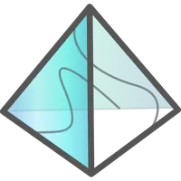
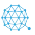
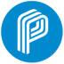

Hdac(HDAC) HDAC是利用物联网络配合Private Blockchain, 实现更安全的信任基础传输，不论是机器与机器之间的信息交换，或是人与人之间的价值转移过程，基于对私有链实际使用上的理想蓝图， 开...
大金锤-POCBGH(POCBGH) POCBGH（POC大金锤）是由新加坡532算力链盟基金会全资打造，基于区块链核心技术开发的加密数字资产，POCBGH以打造区块链社交全球生态圈信用体系为目标，以区块链技术为支撑，利用...
币多币-BDB Token(BDB) 币多币（BDB Token）是币多交易所基于数学和密码学推出的交易挖矿数字货币，由多用户参与交易以区块链技术去中心化进行运作。币多网交易所的会员通过交易挖矿产生并上线后交易可获得BDB。
 极光链-Aurora(AOA) Aurora（AOA）极光链在技术上不断的升级以完成自己的使命：DPOS+BFT共识机制，快速共识基础上最大程度降低分叉风险；P2P立体网络，通过网络分层的方式，实现快如闪电安全通信；独...
流量币-Ad Pay Token(APT) AdPay区块链致力于为广告、流量主提供高效安全的广告集成服务和业务精准对接，实现流量的快速变现以及数字资产的保值增值，并为各类型广告、推广商以及区块链方、交易所等提供流量...
超零币-Super Zero(SERO) Super Zero（SERO）是一个支持图灵完备智能合约的隐私数字货币，同时也是一个允许开发者自行发布匿名数字资产的隐私保护平台，可以让去中心化应用具有隐私保护功能
 量子链-Qtum(QTUM) Qtum Blockchain（简称“量子链”或“Qtum”）致力于开发比特币和以太坊之外的第三种区块链生态系统，通过价值传输协议（“Value Transfer Protocol”）来实现点对点的价值转移，并根据...
六域链-SDChain(SDA) 六域链（SixDomainChain, SDChain）是全球首个融合物联网“六域模型”国际、国家标准和分布式区块链参考架构标准的去中心化公有区块链生态体系，充分考虑物联网技术特点和商业生态建...
ParagonCoin(PRG) Paragon是一家为大麻行业开发种子到销售跟踪解决方案的区块链公司，是首家专门致力于利用这种基于区块链的智能合约，创建并且促进专门致力于促进大麻在世界合法化和系统化的社区
PFT Token(PFT) Public Financial Trade Chain以PFT Token（简称PFT）为媒介，利用区块链技术，结合金融产业和金融生态链上的应用和商业场景，基于智能合约和Token系统，由Public Financial Trade...
Primalbase(PBT) Primalbase建立在共享工作空间完善业务模式的基础上，将传统的办公室租赁转变为基于社区的新一代生态系统，您可以使用以太坊和基于Waves的数字令牌共享，出售或出租高质量的办公空间
 Privatix(PRIX) Privatix旨在为闲置的网络流量创造需求者和供给者的市场，Privatix网络建立在大量网络参与者之上；在Privatix的网络上拥有两方设定，销售宽带的代理商和购买宽带的客户，客户用代...
Profile Utility Token(PUT) Robin8 Profile Utility Token（PUT）是一种基于区块链技术的社交媒体新浪潮，允许个人资料所有者通过区块链技术对其社交媒体存在进行标记化和货币化


是一种新型的原生多链系统，使得区块链智能合约的大规模行业应用成为可能")